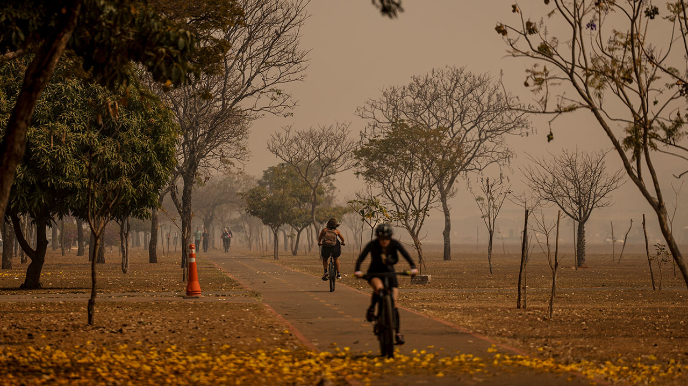
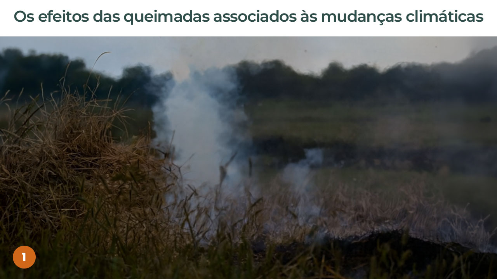
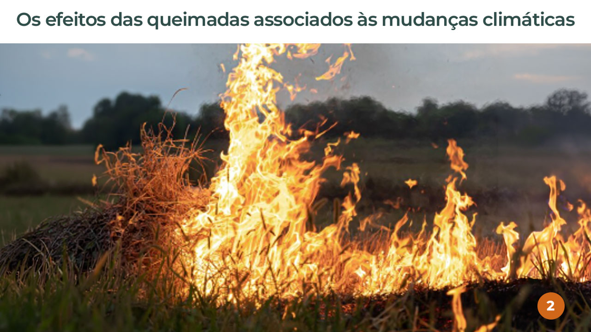
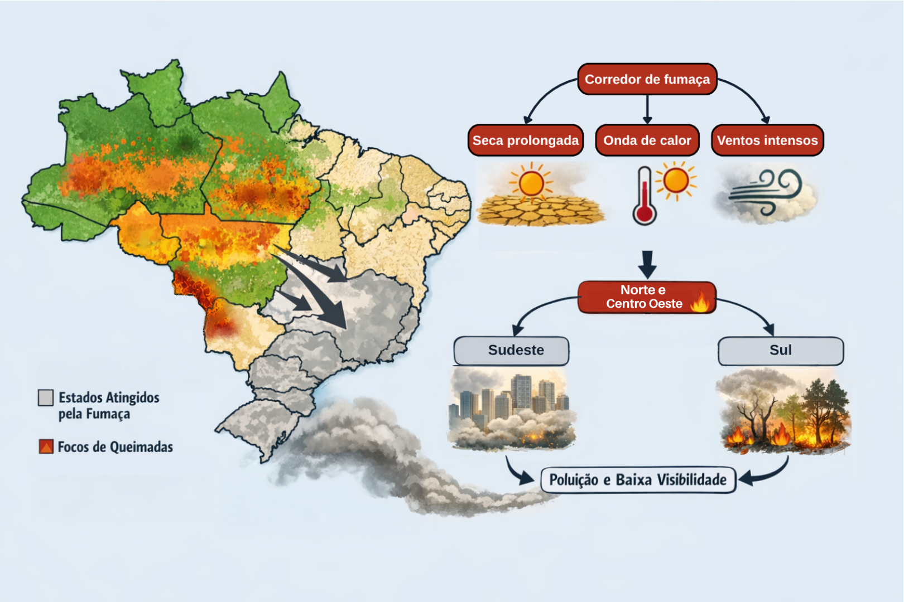
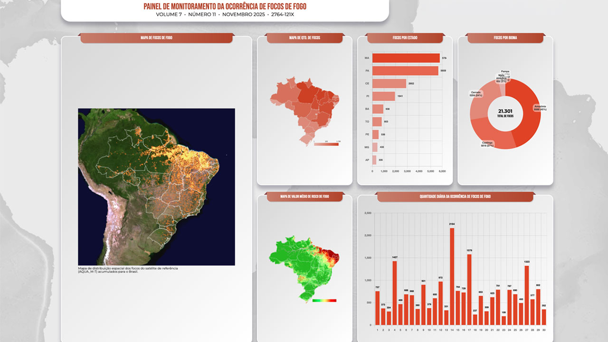
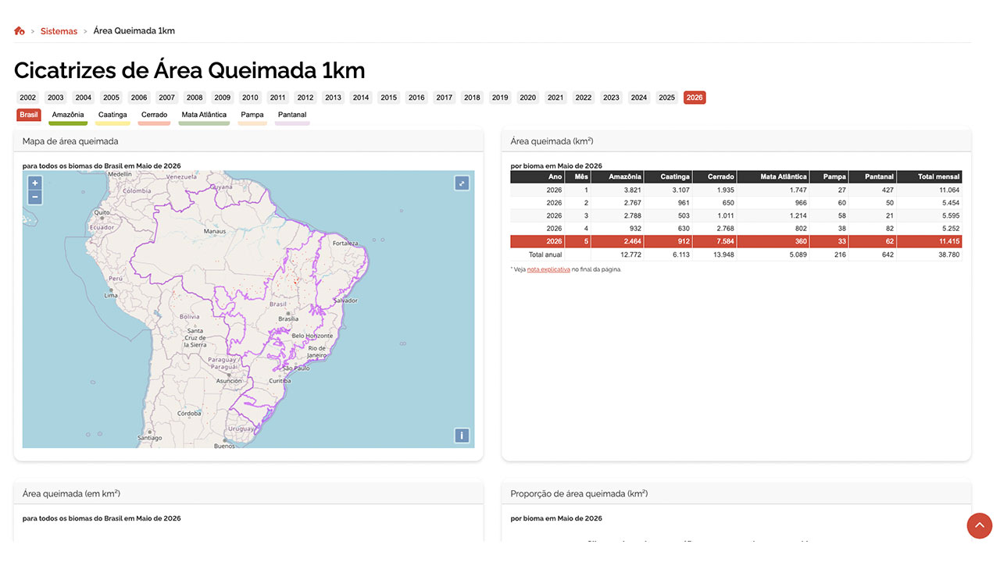
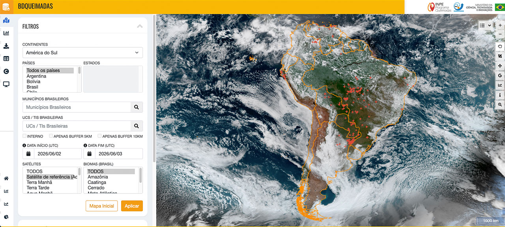

Incêndios florestais e queimadas
Seja bem-vindo(a) à primeira aula do módulo V.
Nesta etapa, vamos reconhecer os fatores climáticos e ambientais que favorecem a ocorrência de queimadas e incêndios florestais.
Ao final desta aula, você estará apto(a) para identificar os fatores climáticos, ambientais e socioeconômicos que favorecem a ocorrência de queimadas e incêndios florestais, assim como as ferramentas de monitoramento desses eventos.
Vamos começar!
Queimadas e incêndios florestais
Como vimos nos módulos anteriores, as mudanças climáticas têm contribuído para a intensificação de diversos fenômenos climáticos extremos, como chuvas intensas, secas, estiagens prolongadas e ondas de calor cada vez mais frequentes.
A alteração dos padrões de chuva e de temperatura influencia diretamente as condições ambientais, tornando os ecossistemas mais vulneráveis ao fogo. Períodos mais longos de estiagem, associados a temperaturas elevadas e baixa umidade do ar, favorecem o ressecamento da vegetação, criando um ambiente propício para a ocorrência de queimadas e incêndios florestais.

Como consequência, observa-se o aumento da frequência, da intensidade e da extensão desses eventos, que causam impactos ambientais, sociais e econômicos significativos.
Você já pensou como um incêndio florestal ocorrido a centenas de quilômetros pode afetar a saúde da população do seu território?
Antes de aprofundarmos essa discussão, é fundamental compreender a diferença entre queimadas e incêndios florestais, termos que muitas vezes são utilizados como sinônimos, mas que possuem significados distintos:
As queimadas consistem em uma prática tradicionalmente utilizada na agricultura e na pecuária, na qual o fogo é empregado como instrumento para a limpeza do terreno, a renovação de pastagens ou a eliminação de resíduos vegetais. Quando realizadas de forma planejada, com autorização dos órgãos competentes e seguindo normas técnicas e legais, são chamadas de queimadas controladas. No entanto, quando ocorrem sem planejamento, sem acompanhamento técnico ou em desacordo com a legislação, tornam-se altamente perigosas, podendo sair do controle e provocar grandes danos ao meio ambiente.
Os incêndios florestais, por sua vez, caracterizam-se pela propagação do fogo de maneira descontrolada em áreas de florestas, matas, campos ou outras formações vegetais. Esses incêndios podem ter origem em queimadas que fugiram ao controle, mas também podem ser causados por fatores naturais, como raios, ou por ações humanas intencionais ou negligentes, que podem ser classificadas como crimes ambientais.
Após compreender essas diferenças, é importante refletir sobre os riscos e a necessidade de reavaliar o uso do fogo, especialmente diante do cenário de mudanças climáticas. Surge, então, o seguinte questionamento:
Diante dos efeitos das mudanças climáticas, ainda devemos usar as queimadas na agricultura?
No Brasil, as queimadas foram utilizadas durante décadas por pequenos, médios e grandes proprietários rurais como uma prática comum no manejo da terra. O uso do fogo, nesses casos, tem como objetivos a preparação de áreas para o cultivo agrícola, a renovação de pastagens, o controle de pragas e doenças em plantas, além da limpeza do terreno e da redução do material combustível presente na superfície do solo.
Embora, em um primeiro momento, essa “limpeza” do solo possa parecer eficiente e de baixo custo, o uso do fogo provoca diversas alterações nas características físicas, químicas e biológicas do solo, e muitas delas são prejudiciais, inclusive para a própria produção agropecuária.
touch_app Clique Toque no botão entre as imagens e entenda o processo:


- Após a queimada, a camada superficial do solo fica exposta, sem cobertura vegetal e com menor proteção contra a ação do vento e da chuva, o que favorece o ressecamento, a compactação e os processos de erosão. Embora as cinzas liberem temporariamente alguns nutrientes importantes para as plantas, como fósforo (P) e potássio (K), esse aumento de fertilidade é de curta duração. Com o passar do tempo, ocorre a perda gradual desses nutrientes, resultando no empobrecimento do solo em médio e longo prazo e na redução de sua capacidade produtiva.
- Esse cenário torna-se ainda mais grave diante dos efeitos das mudanças climáticas. O aumento das temperaturas e os períodos mais prolongados de seca elevam o risco de perda de controle das queimadas dentro das propriedades rurais. Nessas condições, o fogo pode se espalhar rapidamente, transformando-se em incêndios florestais de grandes proporções, causando prejuízos materiais e, sobretudo, impactos severos à biodiversidade, à saúde humana e à vida de animais silvestres e domésticos.
Além disso, as consequências das mudanças climáticas dificultam a recuperação natural do solo após as queimadas, tornando esse processo mais lento e menos eficiente. Em razão disso, cada vez mais faz-se necessário repensar o uso do fogo na agricultura, buscando alternativas existentes de manejo mais sustentáveis e compatíveis com os desafios climáticos atuais.
O clima, as queimadas e os incêndios florestais
Como dissemos, o clima exerce um papel fundamental na dinâmica das queimadas e dos incêndios florestais, influenciando diretamente sua ocorrência, intensidade e propagação. Fatores climáticos como temperatura, regime de chuvas, umidade do ar e ventos determinam o nível de umidade da vegetação e do solo, criando condições mais ou menos favoráveis ao surgimento de focos de incêndio.
Observe a seguir:
Nas últimas décadas, as mudanças climáticas têm alterado significativamente esses fatores, resultando em períodos mais longos de seca e no aumento da frequência e intensidade das ondas de calor.
Essas condições extremas favorecem o ressecamento da vegetação, transformando florestas, campos e áreas agrícolas em ambientes inflamáveis.
Como consequência, observa-se um aumento no número e na gravidade dos incêndios florestais em diversas regiões do mundo.
As condições climáticas também influenciam o alcance do fogo e de seus efeitos. Em situações em que ventos intensos atuam em ambientes secos e quentes, as chamas tendem a se espalhar rapidamente, tornando o controle dos incêndios ainda mais difícil.
Além disso, os ventos podem transportar plumas de fumaça, compostas por diversos poluentes, para regiões distantes do local de origem do fogo. Esse transporte amplia consideravelmente a população exposta aos efeitos das queimadas e dos incêndios florestais, além de dificultar o monitoramento e a prestação de assistência a essas populações.
Um exemplo brasileiro desse fenômeno é a dispersão da fumaça gerada por incêndios florestais na Amazônia e no Pantanal para outras regiões do país, alcançando distâncias de milhares de quilômetros.
Observe com atenção a imagem a seguir.

Ainda, os incêndios florestais também atuam como um fator de retroalimentação das mudanças climáticas. A queima de lavouras, florestas ou outros ambientes resulta na emissão de grandes quantidades de Gases de Efeito Estufa (GEE), como o dióxido de carbono, contribuindo para o aumento da concentração desses gases na atmosfera e intensificando os processos de aquecimento global.
Queimadas, incêndios florestais e poluição do ar
As queimadas e os incêndios florestais constituem importantes fontes de poluição atmosférica, uma vez que resultam na liberação de uma mistura complexa de gases e partículas de diferentes tamanhos, capazes de afetar a qualidade do ar em escalas locais, regionais e até continentais.
Entre os principais poluentes gasosos emitidos pelas queimadas destacam-se o monóxido de carbono (CO), o dióxido de carbono (CO₂), os óxidos de nitrogênio (NOₓ) e os compostos orgânicos voláteis (COVs). Além desses gases, as queimadas também são fontes significativas de material particulado (MP, do inglês PM), especialmente das frações inaláveis grossa (PM₁₀) e fina (PM₂.₅).
![Infográfico comparativo com o título: comparação do tamanho do material particulado com fio de cabelo e um grão de areia. A maior figura da imagem é um fio de cabelo ampliado, disposto na diagonal, indo da parte superior esquerda em direção à parte inferior direita, com cor cinza esbranquiçada, ao lado do fio há uma legenda com setas pretas apontando para sua espessura: “Cabelo humano 50–70 µm de diâmetro”, abaixo do fio, no lado esquerdo, aparece um conjunto de pequenos grãos de areia ampliados, abaixo há uma seta horizontal preta indicando largura e a legenda: “Areia fina 90 µm de diâmetro” Próximo à parte superior do fio existe um círculo ampliado mostrando partículas pequenas, ao lado está escrito: “MP2,5, Partículas carbonáceas, metais, etc. maior que 2,5 µm de diâmetro”, mais abaixo, próximo à extremidade direita do fio, aparece outro conjunto de partículas, ao lado está escrito: “Poeira, pólen, etc. maior que 10 µm de diâmetro”](../media/images/modulo5/aula1-img4.jpg "Fonte: Roiko e col, 2019")
O material particulado proveniente da queima de biomassa pode conter ainda compostos tóxicos, como os hidrocarbonetos aromáticos policíclicos (HAPs), que são formados durante a combustão incompleta da matéria orgânica e podem aderir às partículas finas presentes na fumaça.
A composição química do material particulado varia conforme o tipo de vegetação queimada, a intensidade do fogo e as condições de combustão, como a disponibilidade de oxigênio e a umidade do material combustível. Queimadas em áreas florestais densas, por exemplo, tendem a gerar maiores concentrações de partículas finas, enquanto queimadas em áreas agrícolas podem emitir partículas com características físico-químicas diferentes. Cada uma das substâncias liberadas durante a queima e lançadas na atmosfera apresenta riscos à saúde da população exposta, os quais serão abordados de forma mais detalhada na próxima aula.
O monitoramento das queimadas e incêndios florestais no Brasil
O Brasil dispõe de diversas ferramentas e bancos de dados públicos para o monitoramento dos focos de fogos e da dispersão da fumaça em seu território. O Instituto Nacional de Pesquisas Espaciais (INPE), por meio do Programa Queimadas, disponibiliza diferentes plataformas de monitoramento de acesso livre, permitindo que qualquer pessoa consulte essas informações. Essas plataformas possibilitam tanto a identificação de focos de fogo em tempo quase real, quanto o acesso a séries históricas de dados sobre queimadas em todo o país. A partir dessas informações, é possível acompanhar a ocorrência e a distribuição espacial dos incêndios florestais ao longo do tempo, em todo o país.



Os dados disponibilizados pelo INPE são ferramentas importantes para diversos públicos, incluindo profissionais da saúde, educadores, gestores públicos e pesquisadores, pois permitem a avaliação do risco de ocorrência de fogo e de seus potenciais impactos em diferentes regiões do Brasil. Clique aqui para acessar os dados.
Nesta aula vimos que as mudanças climáticas têm aumentado a frequência e a intensidade das queimadas e dos incêndios florestais, devido ao aumento das temperaturas, à redução das chuvas e aos períodos prolongados de seca, que deixam a vegetação mais seca e inflamável.
Entendemos também a diferença entre queimadas, utilizadas de forma controlada na agricultura e na pecuária, mas que podem sair do controle, e incêndios florestais, que ocorrem de maneira descontrolada e podem ser causados por fatores naturais ou ações humanas.
Além disso, verificamos como o uso do fogo pode provocar degradação do solo, perda de biodiversidade e impactos à saúde humana, especialmente pela emissão de gases poluentes e de material particulado fino, como o PM₂.₅, que afeta a qualidade do ar.
Também compreendemos que os incêndios florestais contribuem para o aumento dos Gases de Efeito Estufa, intensificando o aquecimento global, e conhecemos a importância do monitoramento realizado pelo INPE para acompanhar os focos de incêndio e auxiliar na prevenção e no controle desses eventos.